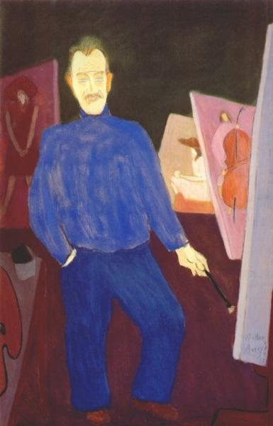

Milton Avery was an American painter celebrated for his portraits, still lifes, and landscapes. Working with both oils and watercolors, he used broad swaths of luminous color and stylized forms, to capture the essence of a scene without fixating on details. “I try to construct a picture in which shapes, spaces, colors, form a set of unique relationships, independent of any subject matter,” he once said. Born on Ma rch 7, 1885 in Altmar, NY, he grew up in Connecticut and went on to attend art classes while working several jobs in Hartford. Moving to New York in 1925, his wife the artist Sally Michel Avery supported the two of them by working as a commercial illustrator in the city. Over the following years, he befriended other painters of the era, such as Mark Rothko, Adolph Gottlieb, and Barnett Newman, developing the increasingly abstract style exemplified by his late work Green Sea (1954). His paintings remained relatively unknown until 1929, when the Phillips Collection in Washington, D.C. became the first museum to purchase his work. Later in Avery’s life, he often traveled to the mountains of New Hampshire and Vermont during the summer, returning to New York in the winter months.